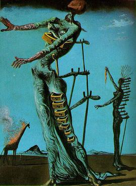
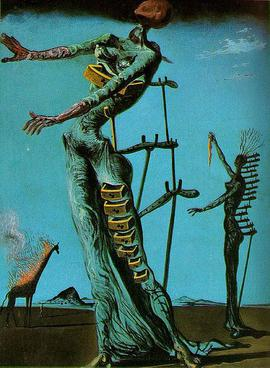
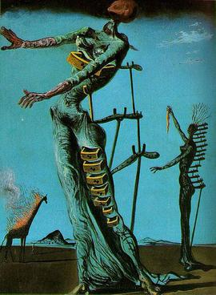

Gallery
Here in our gallery are some of Dalí's greatest works! Feel free to browse through them, and click on one to learn more about it!


 



Here in our gallery are some of Dalí's greatest works! Feel free to browse through them, and click on one to learn more about it!
